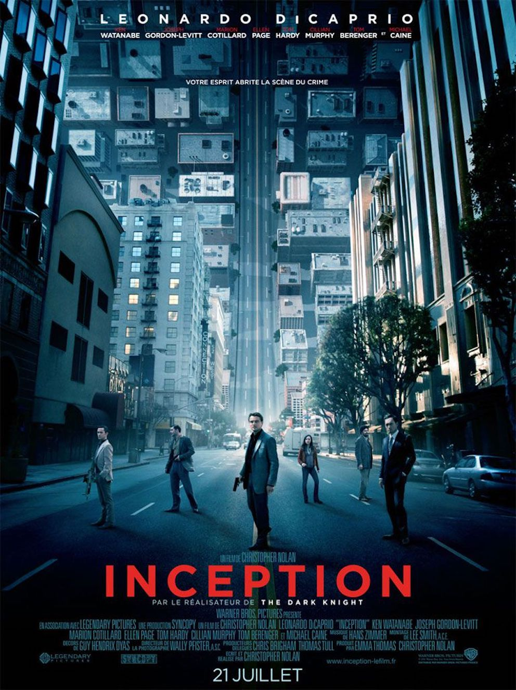
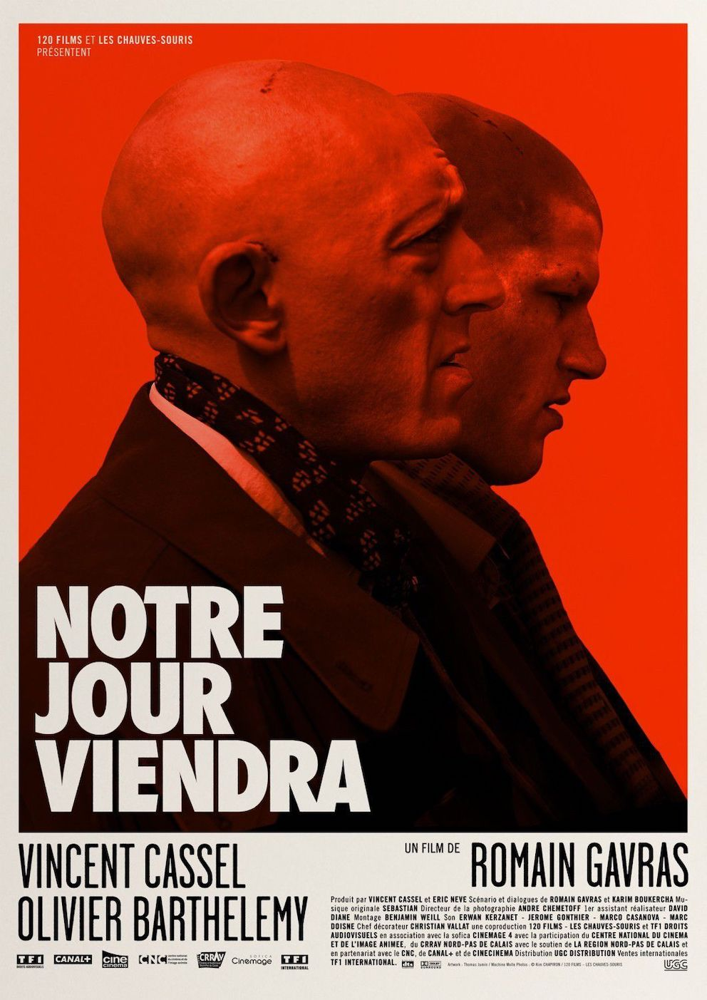

Romain Bertrand
Consultant @IBM
I am working at IBM France in Artificial Intelligence consulting at the moment. I'd like to learn coding to understand my world. I am 25 years old and live in Paris.
Visit IBM website
My Favorite Movies
|  | Inception - Christopher Nolan Dom Cobb est un voleur expérimenté dans l'art périlleux de `l'extraction' : sa spécialité consiste à s'approprier les secrets les plus précieux d'un individu, enfouis au plus profond de son subconscient, pendant qu'il rêve et que son esprit est particulièrement vulnérable. Très recherché pour ses talents dans l'univers trouble de l'espionnage industriel, Cobb est aussi devenu un fugitif traqué dans le monde entier. |
|  | Notre jour viendra - Romain Gavras Patrick et Rémy n'ont ni langue, ni pays, ni armée : ils sont roux. Ensemble ils vont combattre le monde et sa morale, dans une quête hallucinée vers l'Irlande et la liberté. |
 |
Funn Games U.S - Michael Haneke Alors qu'Ann, Georges et leur fils viennent d'arriver dans leur maison de campagne, deux charmants jeunes hommes leur rendent une visite inattendue : ils sont polis, souriants et habillés chic. Ann n'a pas de raison particulière de se méfier de ces jeunes gens qu'elle croit être des invités de leurs voisins, elle les reçoit donc aimablement. Mais la situation se dégrade assez vite et la petite famille réalise bientôt qu'elle a affaire à deux dangereux psychopathes violents, pervers et prêts à tout. D'ailleurs ceux-ci leur proposent de participer à un jeu dont les règles sont simples : « Vous pariez que vous serez toujours vivants demain à neuf heures ? Nous parions que vous serez morts. OK ? ». |